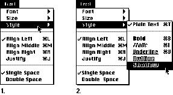
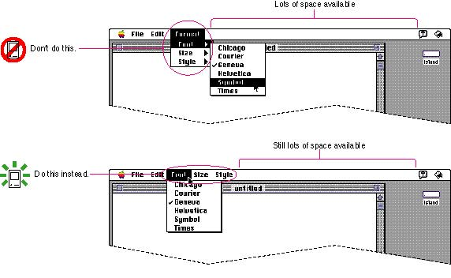
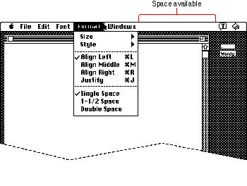
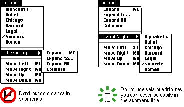
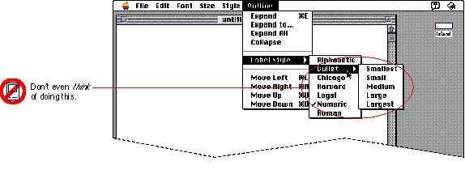

|
Hierarchical MenusHierarchical menus are menus that include a menu item from which a submenu descends. You can offer additional menu item choices without taking up more space in the menu bar by including a submenu in a main menu. When the user drags the pointer through a menu and rests it on a hierarchical menu item, a submenu appears after a brief delay. To indicate that a submenu exists, use a triangle facing right, as shown in Figure 4-36.Figure 4-36 A hierarchical menu  Submenus add complexity to the interface. They hide choices from people by adding a layer to menus. They are physically more difficult to use than menus that pull down from the menu bar. You should use a submenu only when you have more menus than fit in the menu bar. Figure 4-37 shows an example of unnecessary submenus. Figure 4-37 Don't use submenus unnecessarily  When you use submenus, include them in a menu with a logical relationship to the choices they contain. In the example shown in Figure 4-38, the submenus are in the logical menu. However, since there is still space available in the menu bar, it's questionable whether the submenus should exist. They would be more visible as main (pull-down) menus in the menu bar. Fonts should always be in their own separate menu because users often have very long lists of fonts. If you find that there is still a lot of space between
your last menu title Figure 4-38 shows an example of a 9-inch screen that still allows room for more menus. The Size and Style submenus would fit in the menu bar. Figure 4-38 A menu bar on a 9-inch screen with space for more menu titles  Hierarchical menus work best for providing a submenu of
attributes. A Figure 4-39 Examples of submenu titles  A main menu can contain both standard menu items and
submenu titles. |
|
|
Never use more than one level of submenus. A submenu
at the second level would be buried too deep in the
interface and would unnecessarily create another level of
complexity. Also, it takes more time for the user to
use and peruse a hierarchical menu than a pull-down menu. It is physically difficult to use a second level of submenus without slipping off the first submenu. Figure 4-40 shows an example of a technique to avoid using with submenus. |
|
Figure 4-40 Avoid more than one level of
submenus
 |